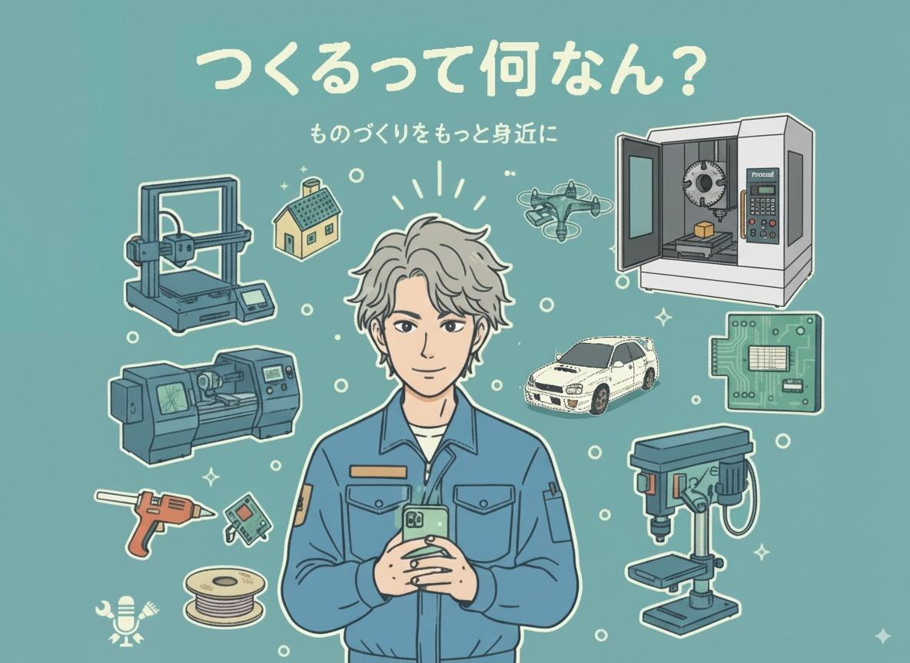

工作機械操作のインストラクターであり、中小企業診断士を目指す「しょくにんさん」が、製造業の現場にAIやIoTなどの最新技術を泥臭く導入し、製造業DXを進めていくリアルな挑戦を伝えるポッドキャスト番組です。
再生ボタンを押すだけで、この場所でそのまま番組がスタートします！
「私も新しい技術に挑戦してみたい！」「現場のDXについて聞いてほしい」というメッセージや応援の声をぜひ教えてください。あなたの声が、次の挑戦のエネルギーになります！
おたよりフォームを開く 公式X (旧Twitter) を見る地域の小さな工場や現場をデジタルでもっと便利に！IoTの活用や診断士の視点を交え、泥臭く現場を変えていく未来への挑戦の軌跡です。
形のないアイデアが目の前で立体になっていく感動！初心者向けの選び方から、現場を助けるちょっとマニアックな条件出しまで挑戦しています。
ものづくりの王様、工作機械！現役インストラクターの視点から、プロの技や古い機械を上手に安全に動かすための実験と挑戦の記録です。
一見「難しそう」に思えるAI技術。ハンダ付けの不良検出AIを組んでみたり、仕組みを泥臭く検証しながら、誰でも扱える武器へと変えていく部屋です。
肩の力を抜いて、ものづくりの合間のひと息. ゲームセンターのクレーンゲームの話から、日々のちょっとした気づきをゆるく繋ぎます。